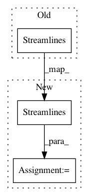

97bcda32d46ac2c2d8f97f9fe44ef8cdc3253710,pynets/registration/register.py,,direct_streamline_norm,#Any#Any#Any#Any#Any#Any#Any#Any#Any#Any#Any#Any#Any#Any#Any#Any#Any#Any#Any#Any#Any#Any#Any#Any#Any#Any#Any#Any#Any#Any#,21
Before Change
adjusted_affine[2][3] = -adjusted_affine[2][3]*z_mul
// Deform streamlines, isocenter, and remove streamlines outside brain
streams_final_filt = Streamlines(utils.target_line_based(
transform_streamlines(transform_streamlines(
[sum(d, s) for d, s in zip(values_from_volume(mapping.get_forward_field(), streams_in_curr_grid,
ref_grid_aff), streams_in_curr_grid)],
np.linalg.inv(adjusted_affine)), np.linalg.inv(warped_fa_img.affine)), np.eye(4), brain_mask,
include=True))
// Remove streamlines with negative voxel indices
lin_T, offset = _mapping_to_voxel(np.eye(4))
streams_final_filt_final = []
After Change
// Deform streamlines, isocenter, and remove streamlines outside brain
streams_in_brain = [sum(d, s) for d, s in zip(values_from_volume(mapping.get_forward_field(), streams_in_curr_grid,
ref_grid_aff), streams_in_curr_grid)]
streams_final_filt = Streamlines(utils.target_line_based(
transform_streamlines(transform_streamlines(streams_in_brain,
np.linalg.inv(adjusted_affine)),
np.linalg.inv(warped_fa_img.affine)), np.eye(4), brain_mask, include=True))
// Remove streamlines with negative voxel indices
lin_T, offset = _mapping_to_voxel(np.eye(4))
streams_final_filt_final = []
In pattern: SUPERPATTERN
Frequency: 3
Non-data size: 3
Instances
Project Name: dPys/PyNets
Commit Name: 97bcda32d46ac2c2d8f97f9fe44ef8cdc3253710
Time: 2020-04-19
Author: dpisner@utexas.edu
File Name: pynets/registration/register.py
Class Name:
Method Name: direct_streamline_norm
Project Name: dPys/PyNets
Commit Name: 25c9e79821c9c36942dcec2a45164a1bf2271901
Time: 2019-04-29
Author: dpisner@utexas.edu
File Name: pynets/dmri/track.py
Class Name:
Method Name: run_track
Project Name: dPys/PyNets
Commit Name: 4189b738cbcc9299fcf27e0bd2b34c90e6247cca
Time: 2020-04-01
Author: dpisner@utexas.edu
File Name: pynets/dmri/estimation.py
Class Name:
Method Name: streams2graph